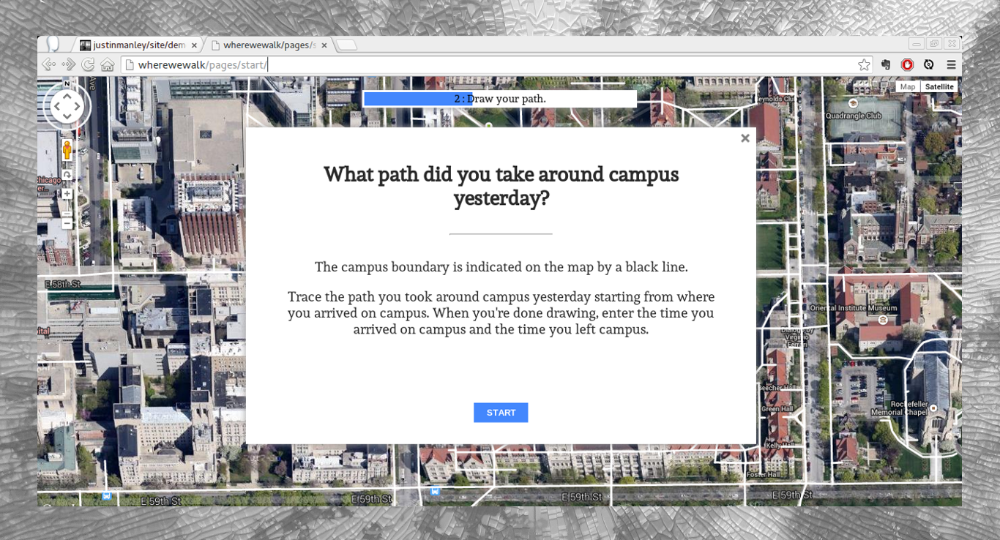

Software engineer and urbanist.
MapKnitter is an online tool for making maps from aerial photos. I worked on MapKnitter as part of Google Summer of Code 2014, improving map annotation functionality and modernizing the codebase to make the site more maintainable.
MapKnitter 2.0, based on the work of Public Lab's 2014 GSOC students, was released in February 2015 and was the first radical overhaul of the site since its creation in 2009.
Leaflet.Illustrate and Leaflet.toolbar came out of my work on MapKnitter in the summer of 2014. I also contributed extensively to Leaflet.DistortableImage.
Waggle is an open platform for intelligent environmental sensors under development at Argonne National Laboratory (ANL). I worked under Rajesh Sankaran at ANL to implement the Waggle binary protocol for communication between sensor nodes and to develop a web application for monitoring incoming data from nodes.
 WhereWeWalk is a web survey tool designed for spatial questions. I developed WhereWeWalk in 2014 for the department of Planning & Design in the University of Chicago's Facilities Services division.